约 40kg·cm 输出扭矩
资料图明确给出约 40kg·cm 输出扭矩，适合关节、摆臂、转台等需要放大扭矩的小型机器人机构。
TTL bus stepper joint actuator
把减速步进电机、同步带二级减速、输出端 12bit 绝对值磁编码器与 TTL 总线控制方案组合到同一套关节执行器资料中，适合机器人关节、摆臂、转台等需要角度反馈、结构紧凑和总线化接入的项目。
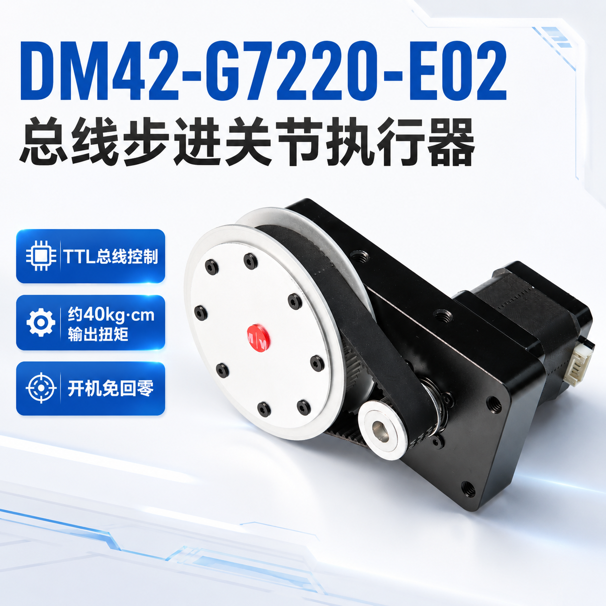
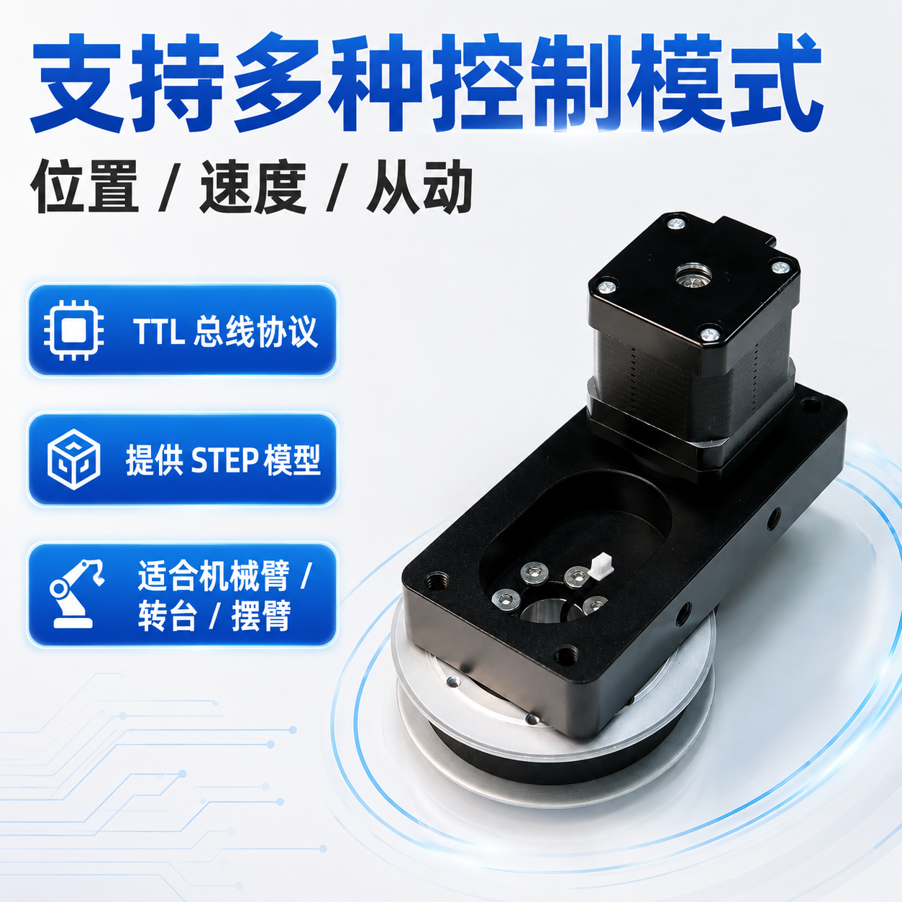
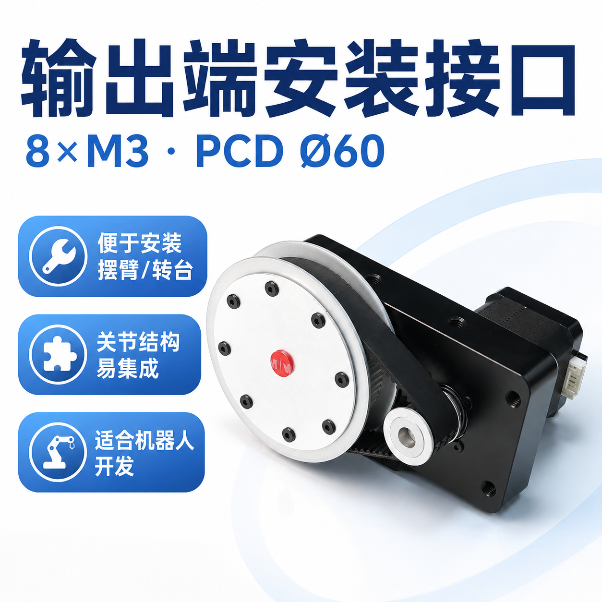
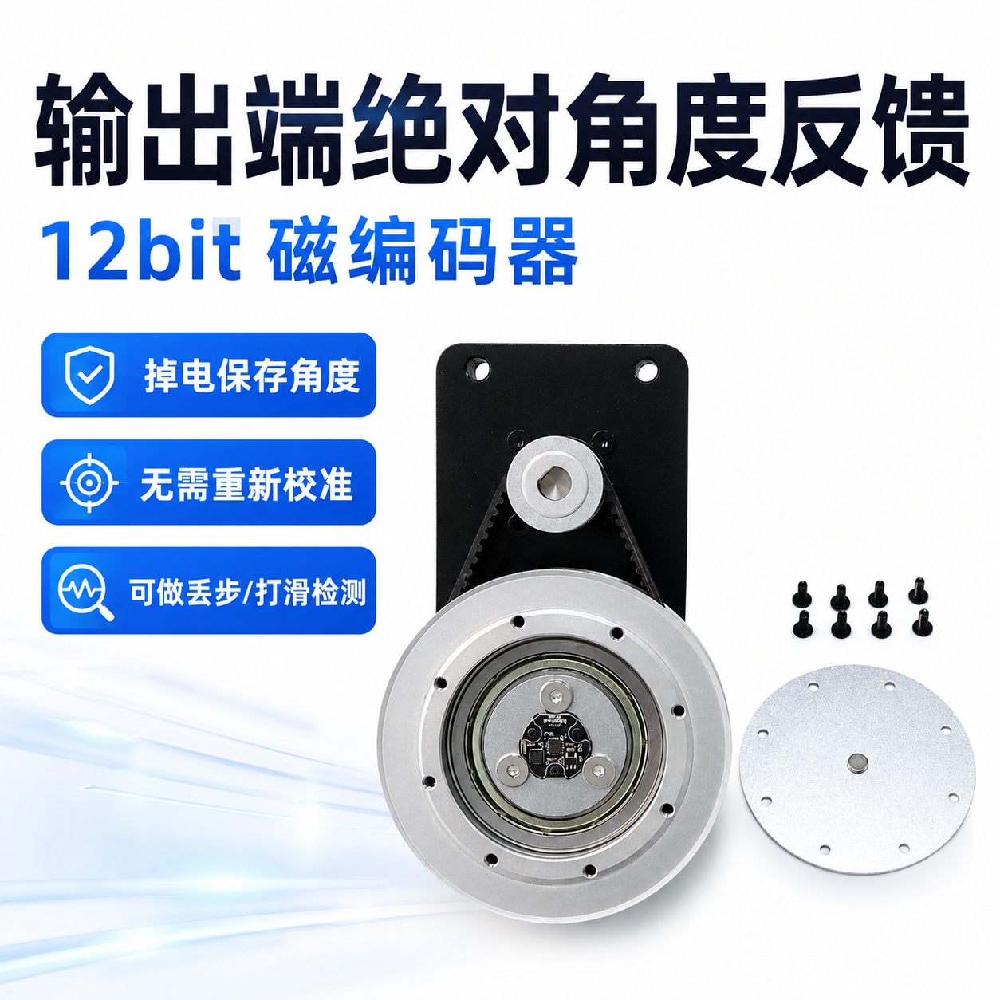
核心优势
资料里的重点并不在“堆参数”，而在于把机械输出、角度反馈、总线接入和常用控制方式放到同一套工程可用方案里。页面只保留现有素材能直接证实的能力与限制。
资料图明确给出约 40kg·cm 输出扭矩，适合关节、摆臂、转台等需要放大扭矩的小型机器人机构。
编码器安装在输出端，能直接读取输出轴绝对角度，比只看电机端位置更适合关节应用与输出端状态核对。
编码器支持保存校准参数，掉电后仍可保存角度信息；再次上电时可先读取当前绝对角度，减少重复回零和重新校准。
现有资料列出位置模式、速度模式与从动模式，便于做角度控制、连续转动和多轴同步动作。
驱动板与编码器均采用 TTL 总线协议，现有素材说明同一根总线最多可挂 252 个设备，适合多节点机器人系统扩展。
资料包已给出 Python / C++ SDK、示例和 STEP 模型，既适合上位机联调，也方便结构设计和二次开发。
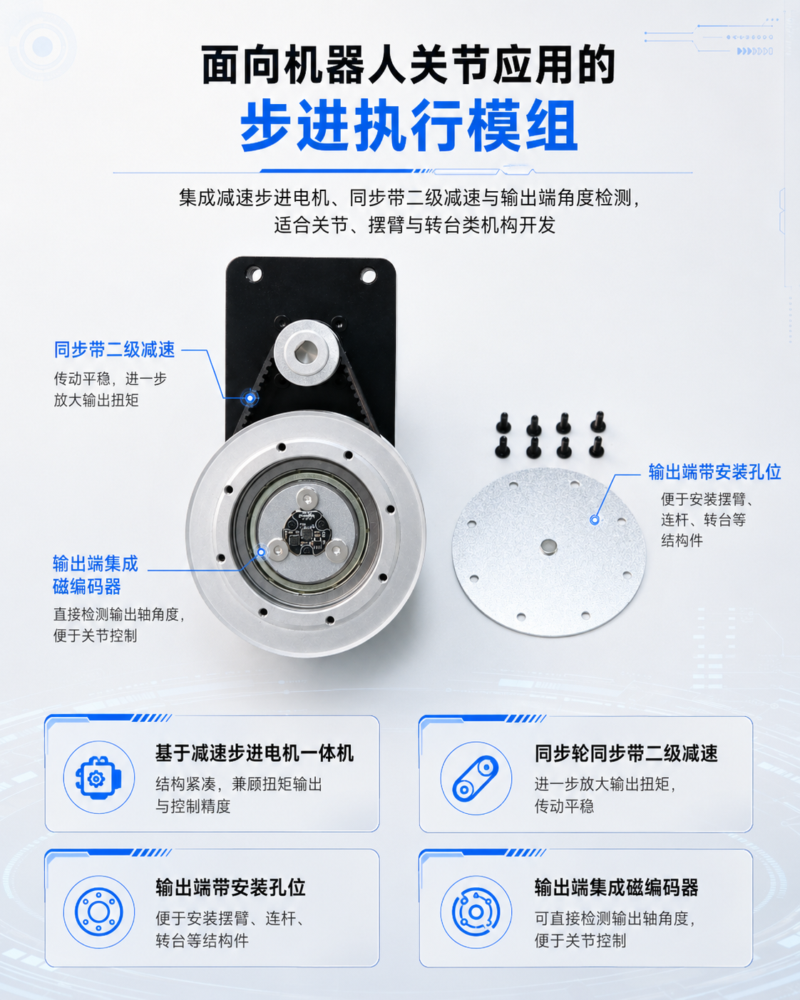
结构定位
现有素材显示，这套执行器以减速步进电机为基础，通过同步轮同步带二级减速进一步放大输出扭矩，并在输出端预留安装孔位，方便连接摆臂、连杆、转台或其它机构件。
控制模式
现有资料给出的控制模式已经足够覆盖多数原型与小批量设备开发场景。你不需要围绕传统 STEP / DIR 自己搭全部底层逻辑，而是可以用更直接的总线指令来组织多轴动作。
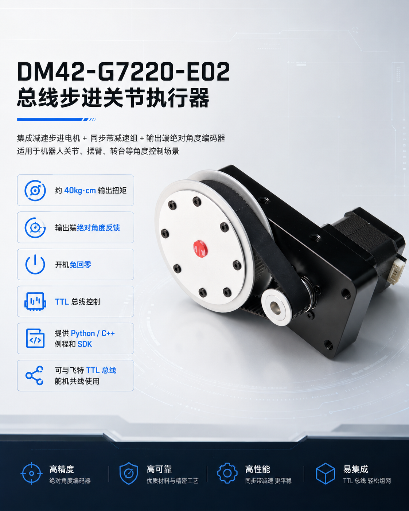
绝对值反馈
这类结构最大的工程价值之一，是把输出端角度检测直接做进执行器方案里。对于机械臂、摆臂和转台，这往往比单纯“能转起来”更重要，因为它直接影响初始化流程、异常检测和系统恢复效率。
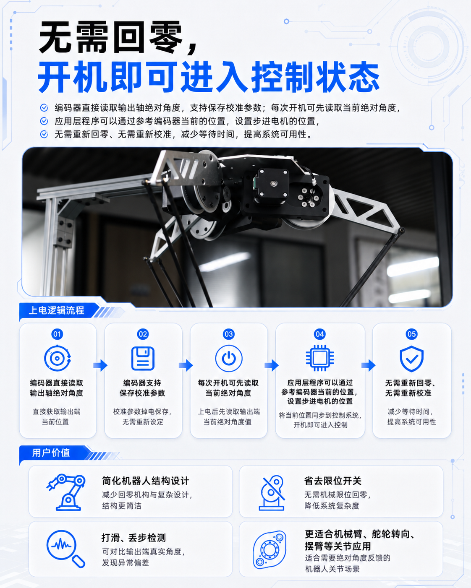
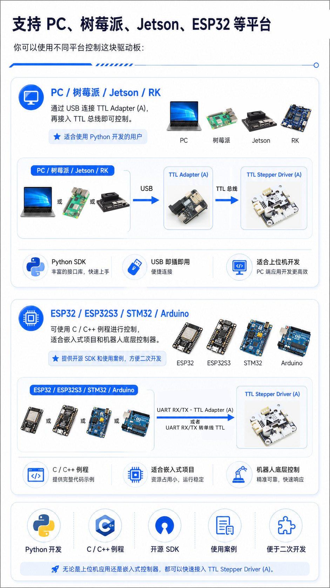
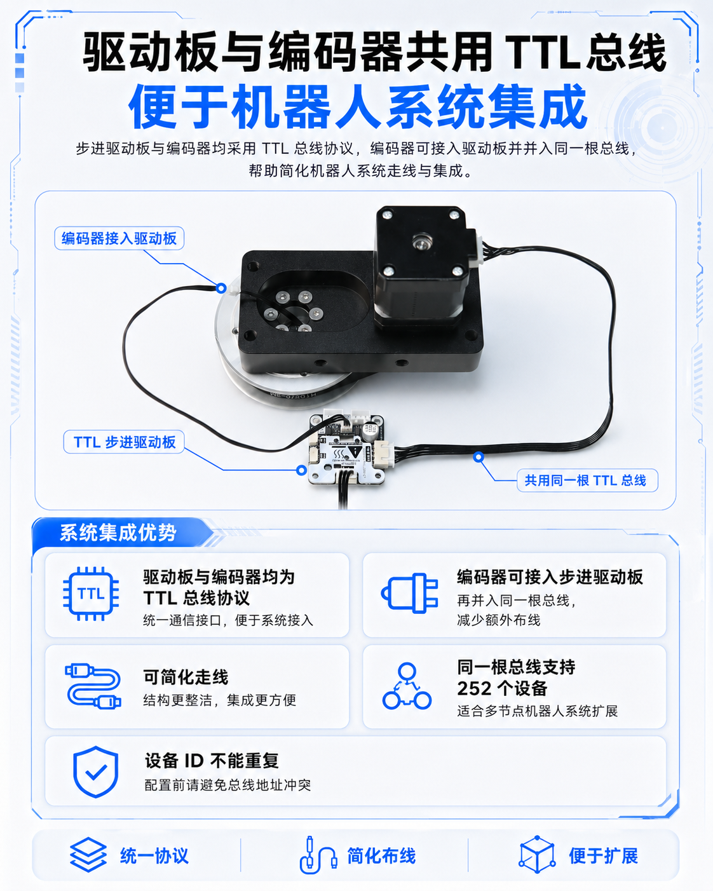
系统集成
现有资料明确说明，驱动板和编码器都采用 TTL 总线协议，编码器可接入驱动板并并入同一根总线。对于要同时控制多个关节、多个执行器和多类总线设备的机器人系统，这种布线方式比传统离散脉冲控制更容易扩展。
开发支持
资料包不仅给了参数和外观图，也把开发与结构设计所需资料放在一起。对于想快速验证机构、总线通信和应用逻辑的团队，这比单独拿到一份机械图更省时间。
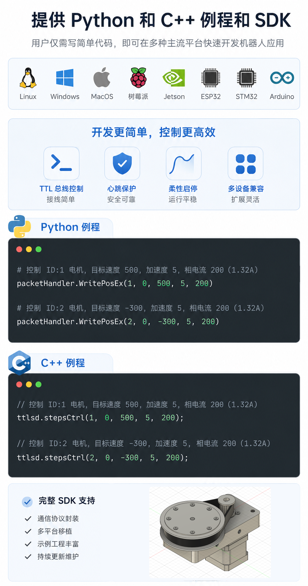
技术参数
| 产品型号 | DM42-G7220-E02 |
|---|---|
| 产品类型 | 总线步进关节执行器 |
| 通讯协议 | TTL 总线 |
| 工作电压 | 9~25.2V |
| 工作电流 | 1.5A |
| 输出扭矩 | 约 40kg·cm |
| 最大转速 | 25rpm（24V / 1.5A） |
| 整机重量 | 约 907g |
| 轴向负载 | 10kg |
| 径向负载 | 15kg |
| 电机减速比 | 5.1818182:1 |
| 同步带减速比 | 72 / 20 = 3.6:1 |
| 同步带型号 | HTD270-3M-15mm |
| 输出端安装接口 | 8 × M3（PCD φ60） |
| 编码器类型 | 12bit 绝对值磁编码器 |
| 编码器分辨率 | 4096 steps / rev |
| 输出端一圈对应步数 | 59694 step |
| 理论控制分辨率 | 约 0.00603° |
| 控制模式 | 位置模式 / 速度模式 / 从动（同步）模式 |
| 总线挂载数量 | 同一总线最多支持 252 个设备 |
| 开发支持 | Python / C++ SDK、例程与 STEP 模型 |
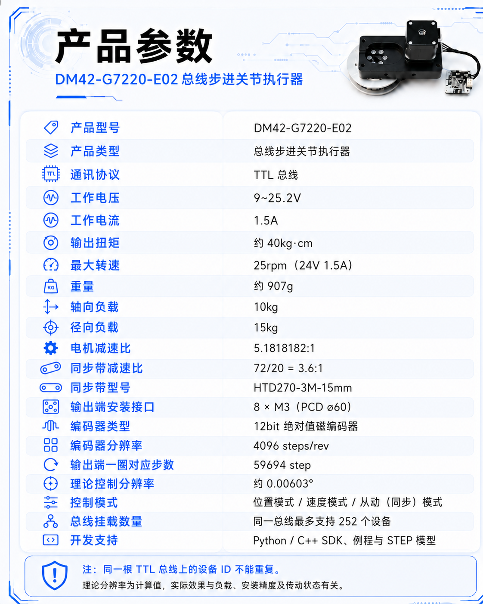
使用提醒
包装清单
包装清单来自现有素材图，页面仍以“实际发货为准”为原则。若项目需要更多 Hub、转接板或其它总线设备，建议后续统一在正式 Wiki 和销售清单中继续补齐链接。
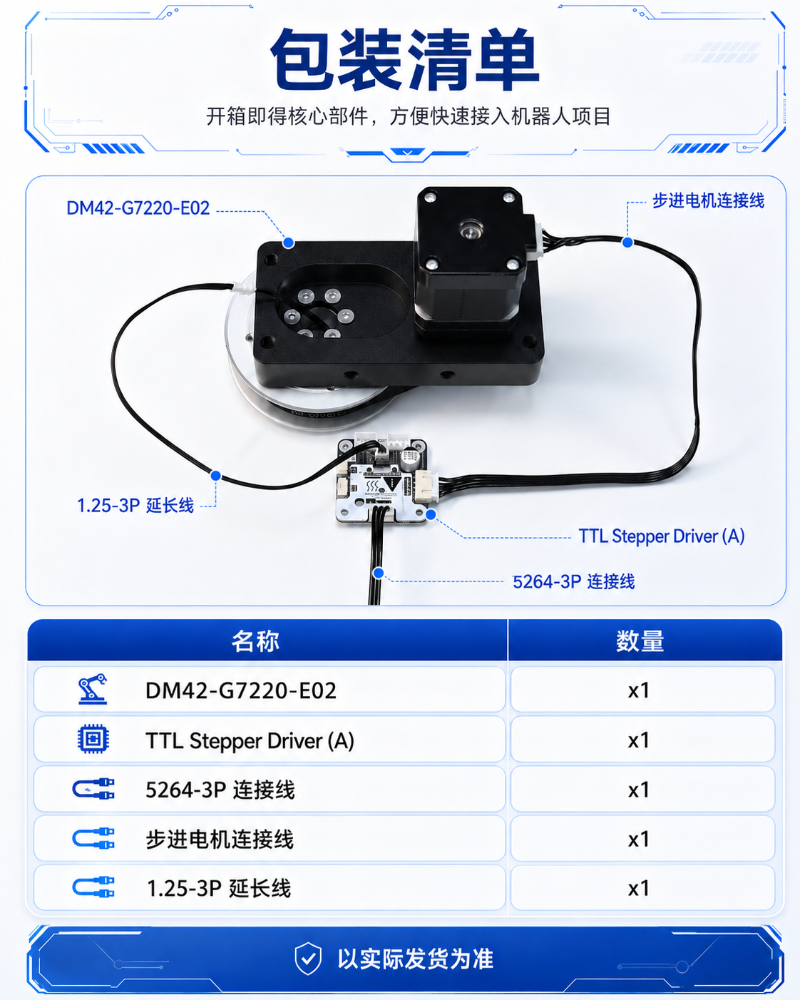
资料入口
当前页面已经保留灵影官网返回入口和 Wiki 按钮占位，后续可继续补挂正式 Wiki、SDK 使用说明、结构图纸下载和更多示例。